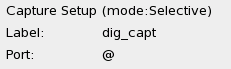
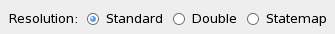
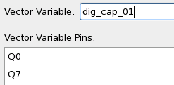
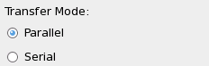
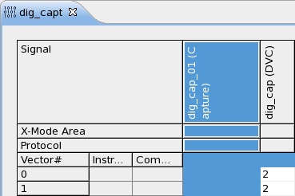
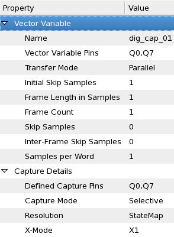
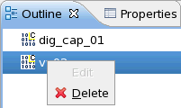

Setting up and deleting a vector variable
The Setup Wizard
To set up a vector variable for digital capturing you use the Setup Wizard. To start it, you must have the pattern you created for digital capturing displayed in the pattern editor.
- In the pattern editor, right-click and select New Setup.
- In the setup selection list, select Digital Capture. The Setup Wizard opens.
The wizard guides you through several steps. Some of the settings are predefined, others can be chosen.
Capture mode: Selective, Sequential, or Undefined

The capture mode is predefined, as it depends on the wavetable used by the capture pattern. If the wavetable contains selective capture actions (for example, r1:C for Capture or r1:D for Don't Capture), the Selective mode is set, otherwise, the Sequential mode is set.
If none of the device pins is defined as a capture pin, the capture mode is set to Undefined.
- Selective mode capturing can be used on all edges, i.e. the number of capture samples taken per test system period (between one and eight) is defined in the wavetable.
- In Sequential mode, data is captured on every vector cycle for the configured device pins.
Device Capture Pins
To define the device capture pins, i.e. on which pins to capture, click Configure. The Pin Selection view lists only pins of the IO and OUT type.
Resolution: Standard, Double, or Statemap

The above capture modes can be combined with two or three resolutions:
- Standard: One capture sample is taken per test system period.
- Double: Two capture samples are taken per test system period (for the Sequential capture mode only).
- Statemap: The number of capture samples to be taken per test system period are read directly from the X-mode definition in the STATEMAP section of the pattern's wavetable.
In Sequential capture mode, the capturing differs for the Standard and Double resolutions.
- Standard: Data are captured on edge 1.
- Double: Data are captured on edge 1 and edge 4.
This means, that you must set up an edge compare on these edges to define, when the data of the pin is to be captured.
Vector Variable and Vector Variable Pins

You must specify a name for the Vector Variable and configure the pins associated with this Vector Variable. The pins must be identical to or a subset of the previously defined Device Capture Pins.
Transfer mode: Parallel or Serial

You can choose between two transfer modes to upload the captured data: Parallel or Serial.
Note that the transfer parameters change depending on your selection:
- For the parallel transfer mode the unit of the parameters is samples.
- For the serial transfer mode the unit is bits. N bits make up a sample.
For examples of the various parameters click here.
Viewing the result
To view the digital capture vector variable in the pattern editor, you must configure the layout and add the vector variable. Its type is marked as Signal (Capture).
Once you have completed the layout configuration, the vector variable appears in the pattern editor.

The Properties view of the capture vector variable shows all its parameters and also allows to edit individual parameters. The exceptions are Capture Mode, Resolution, and X-Mode. To modify these parameters you must set up a new variable.

A vector variable is always related to one specific pattern and cannot be used with another one.
Deleting a vector variable
To delete a vector variable, open the Outline view of the pattern, which the vector variable is attached to. In the Outline view, right-click the vector variable and select Delete.
